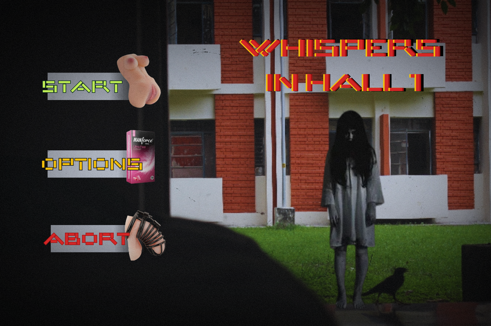
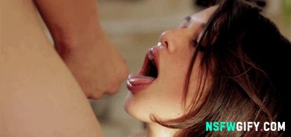
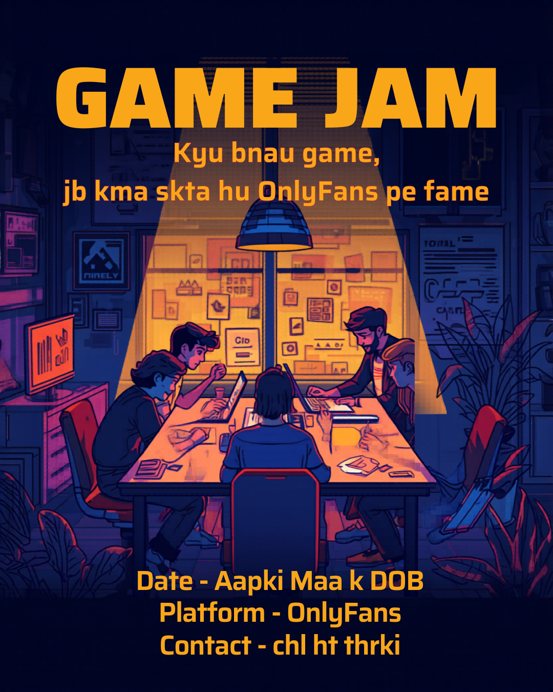

A 2D stealth-horror comedy about surviving public spaces while having an extremely visible boner at the worst possible times.
Setting: Side-scrolling classrooms, metro trains, office meetings, gyms, and elevators populated entirely by women who are completely normal — which somehow makes everything worse. Fluorescent lights buzz constantly. Shadows feel too long. Every hallway feels like a nightmare corridor.
Goal: Reach the exit of each level without anyone realizing you have a boner. The game treats it like a survival-horror infection. The more natural you try to act, the more the controls betray you.
Points: You earn points for walking naturally, maintaining eye contact, standing up successfully, and surviving conversations. Highest rank: "NO ONE KNOWS".
Visual: Dark pixel art with harsh fluorescent lighting. NPCs look completely ordinary while the player animates like a man trying to smuggle cursed dynamite in his pants. Shadows stretch unnaturally during panic. The environment subtly bends at high stress levels.
Audio: Heartbeats mixed with bass-heavy horror drones. Fabric stretching sounds. Nervous swallowing. Tiny movements become absurdly loud in the player's head. During detection scenes, all ambient audio cuts except fluorescent buzzing and slow breathing directly into the microphone.
A 3D psychological horror exploration game about a man isolated in his apartment for weeks, slowly losing trust in whether his desires are truly his anymore.
Setting: A cramped apartment lit by weak fluorescent kitchen lights and pale moonlight leaking through blinds. Mirrors linger too long. Dark windows reflect the room incorrectly. The apartment slowly stops feeling private.
Goal: Survive isolation without fully surrendering control of your body. Reach morning without using the mechanic again.
Narrative Integration — No text, no UI: The mechanic slowly stops feeling voluntary. The player holds the button and the character hesitates first — like he already knows what's about to happen. Sometimes the animation starts before input fully registers. Sometimes it keeps going after release. Mirrors reflect delayed movements. Shadows move slightly out of sync. The character automatically glances toward empty corners during the act, behaving like someone else is in the apartment long before the player notices anything wrong.
Visual: Desaturated 3D interiors with darkness pooling unnaturally around room corners. Camera subtly drifts toward mirrors and black windows during high-stress moments. Reflections occasionally move half a second late. Character animations become less synchronized with player input as the story progresses.
Audio: Fluorescent buzzing. Uneven swallowing. Long stretches of silence where the apartment itself seems to be listening. During late-game scenes, the character quietly whispers:
"...please stop watching me."
No response. Only breathing.
In the final sequence, the character sits exposed in pale moonlight while the player still controls the camera. His hand suddenly stops moving — but the motion continues anyway.
A second pale hand slowly enters frame and rests over his wrist.
The character whispers: "…I didn't touch myself tonight."
Then a woman softly says beside his ear: "There you are."
The second hand slowly squeezes tighter.
Cut to black.
The controller continues pulsing slowly in the player's hands like another person's heartbeat.


Place your model as assets/t3-level3.glb in the assets folder.
